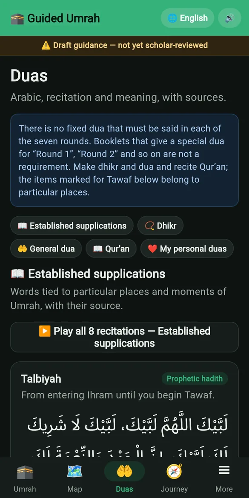
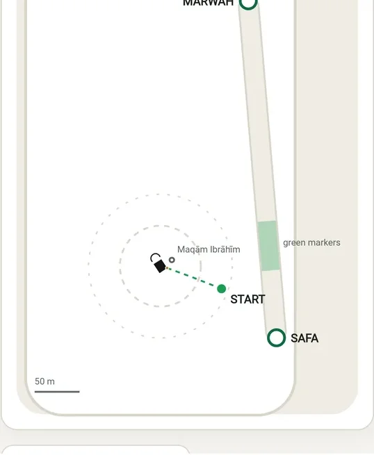
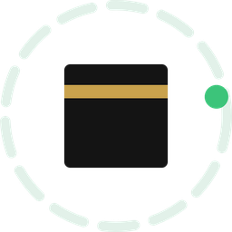

Duas with real recitations
Arabic with meaning and source for every place. Arabic is played from recorded recitations — never a computer voice. Save your own personal duas to remember at the Kaaba.
Free · works offline · 8 languages
From the Miqat to the moment it is complete. Guided Umrah shows where you are, what to do now, which round you are on, and what comes next. Even with no signal.
How it works
Choose guidance for men or women and press start. Every screen answers the same questions: where am I, what do I do now, what comes next.
A reminder before your Miqat on your route, then a short checklist: prepared, intention made, Talbiyah begun. Nothing is skipped by accident.
A big counter you can read in the crowd. If you turn on location help, the phone suggests when a round may be finished — but it never counts for you. You confirm.
Safa → Marwah, Marwah → Safa. The app shows which way you are walking, the green markers, and what to say when you arrive.
Hair, then exiting Ihram, then a clear summary of every step, round and lap. No doubt left about whether you are finished.
Try it
The counter is the heart of the app. Each round is saved the moment you confirm it, with its time — even if the phone restarts. Made a mistake? "Wrong count?" fixes it, and the change is logged.
This is a demo. In the app, the Tawaf counter appears when you reach that step.
Features

Arabic with meaning and source for every place. Arabic is played from recorded recitations — never a computer voice. Save your own personal duas to remember at the Kaaba.
The guide, the map of Masjid al-Haram and the recitations are all inside the app.
GPS, compass and step sensor can suggest when a round or lap may be done. Nothing is ever completed on its own.
The Mataf, Safa, Marwah and the green markers, drawn into the app so it works offline.

Pick your route and the app warns you before you reach your Miqat.
Every round and lap with its time — to review, or to share with family.
Hotel, group leader and emergency contacts, plus Saudi emergency numbers.
Tells you the next step in your language, where your phone's voice supports it.
لَبَّيْكَ اللَّهُمَّ لَبَّيْكَ
Labbayka Allāhumma labbayk
“Here I am, O Allah, here I am.”
Languages
Eight languages, including Urdu written right to left. Switch any time — your progress stays.
Private by design
Open it and start. Nothing to sign up for.
Free, with nothing to sell you during your worship.
Progress, notes and location stay on your phone.
The religious guidance in Guided Umrah is being reviewed by scholars before the public release. It is a helper, not a replacement for learning your Umrah from a scholar. When in doubt, ask a scholar.

Try the full app in your browser today. The Android app is in testing on Google Play, and the iPhone app comes next.